แบบเศษส่วน
อาจจะแบ่งออกเป็นประเภทใหญ่ ๆ ได้ ดังนี้
- แยกเศษ-ส่วน คือ เศษทั้งหมด เป็นอนุกรมชุดหนึ่ง ส่วนทั้งหมด เป็นอนุกรมอีกชุดหนึ่ง เช่น
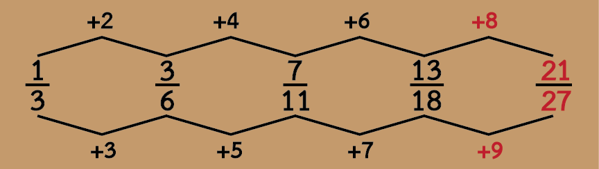
- แบบไขว้
เศษพจน์แรก กับส่วนพจน์หลัว และ ส่วนพจน์หลัง กับเศษพจน์แรก โดยการนำตัวเลขมาบวก หรือ คูณ เช่น
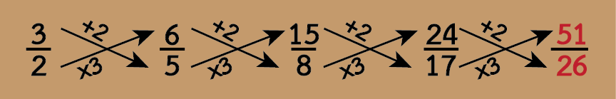
- แบบเศษส่วนสัมพันธ์ เช่น
เศษพจน์แรก + ส่วนพจน์แรก = เศษพจน์หลัง
เศษพจน์แรกคูณด้วยตัวเลข(เช่น 2 หรือ 3) = ส่วนของพจน์หลัง เช่น
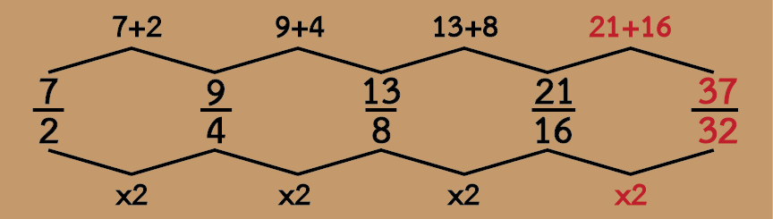
- แบบซ้อน ถ้ามีตัวเลขหลายชุด อาจจะมีอนุกรมซ้อนกันอยู่ ให้มองข้ามชุด จะเห็นอนุกรมซ้อนกันอยู่ เช่น
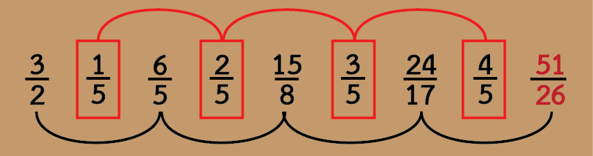
- บางครั้ง ต้องทำส่วนให้เท่ากัน เพื่อหาความสัมพันธ์ของเศษ เช่น
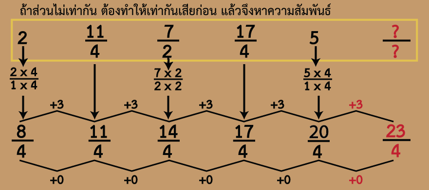
แบบอนุกรมซ้อน
ได้แก่ชุดตัวเลขที่เป็นอนุกรม 2-3 ชุด ซ้อนกันอยู่ มีข้อสังเกตคือ มักจะเป็นชุดตัวเลขที่มีความยาว หลายจำนวน เช่น
จากตัวอย่างจะเห็นว่ามีอนุกรมซ้อนกัน 2 ชุด ซี่งแต่ละชุดจะมีค่าลดลง โดยการลบด้วยตัวเลขที่เป็นระบบ คือลดลงโดยการหารด้วย 2 หรือลดลงครึ่งหนึ่ง ดังนี้
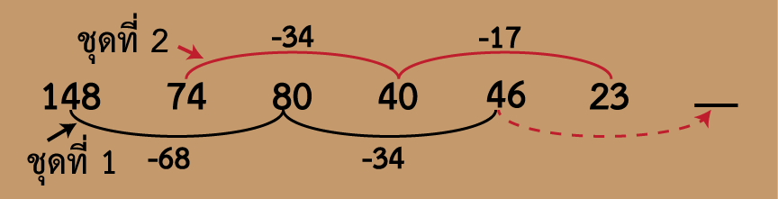
ในการแก้อนุกรมที่มีหลายชุดซ้อนกัน ให้พิจารณาอนุกรมที่จะส่งผลไปยังคำตอบ ซึ่งจะมีเพียงชุดเดียว ในตัวอย่างคือ อนุกรมชุดที่ 1 ในการหาคำตอบให้แก้ปัญหาเฉพาะอนุกรมที่ส่งผลไปยังคำตอบ เท่านั้น ในกรณีตัวอย่างคือ แก้ปัญหาของ อนุกรมที่ 1
ในปี 2566 พบว่ามีอนุกรมซ้อนเพิ่มอีกรูปแบบหนึ่ง คือ อนุกรมซ้อนที่มีความสัมพันธ์กัน โดยที่อนุกรมที่ 2 เป็นผลมาจากอนุกรมที่ 1
ในตัวอย่างที่พบ อนุกรมที่ 2 เกิดจากการคูณตัวหน้าและตัวหลัง ดังภาพ
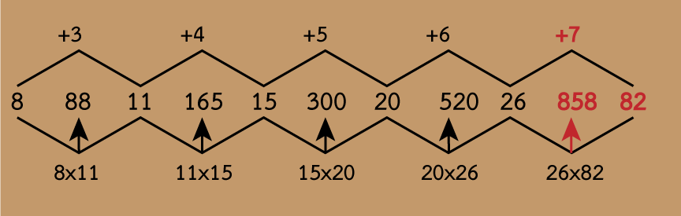
ตัวอย่างนี้ จะสังเกตเห็นว่า ชุดตัวเลขมีหลายจำนวน และมีตัวเลขมาก สลับกับ ตัวเลขน้อย ทั้งนี้เพราะเป็นการคูณกันของตัวหน้าและตัวหลัง ผลลัพธ์จึงค่อนข้างมาก
แบบกั้นห้อง
เป็นอนุกรมที่ถูกแบ่งออกเป็นตอน ๆ สังเกตได้คือ จะค่อนข้างยาวเหมือนกับ อนุกรมแบบซ้อน ต่างกันที่ แต่ละชุดตัดขาดออกจากกันอย่างชัดเจน เช่น
- ตัวที่ 1 บวกตัวที่ 2 เป็นตัวที่ 3
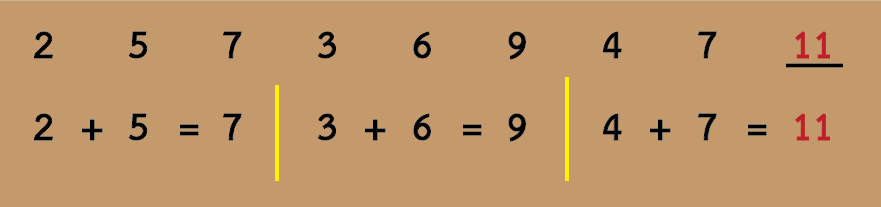
หรืออาจจะดูเป็นอนุกรมแบบซ้อน ก็ได้
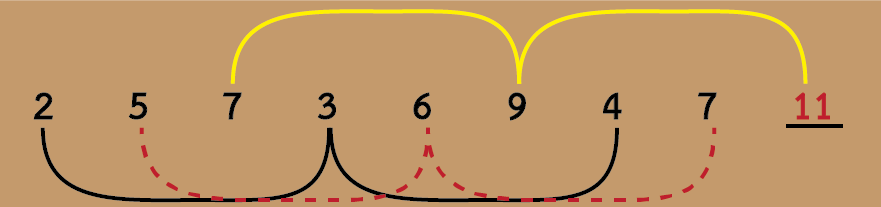
- ตัวที่ 1 บวกตัวที่ 3 เป็นตัวที่ 2 หรือ ตัวที่ 2 ลบด้วยตัวที่ 1 เป็นตัวที่ 3
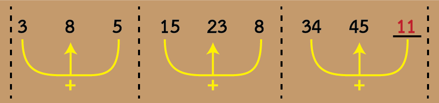
รูปแบบอื่น ๆ
- อนุกรมแบ่งกลุ่ม ซ้ำรูปแบบ อนุกรมชนิดนี้เพิ่งพบใน e-Exam ปี 2566 ของ ก.พ.
อนุกรมชนิดนี้ มีความยาว ประมาณ 8-9 ตัว และจะเห็นว่ามีการจัดกลุ่มแบ่งออกอย่างชัดเจน เช่น
18 16 20 120 118 122 730 เป็นต้น
ในตัวอย่างจะเห็นว่า มีการแบ่งกลุ่ม คือ
[18 16 20] [120 118 122] [730 ...
รูปแบบซ้ำ ในตัวอย่างนี้ คือ -2, +4 ดังภาพ
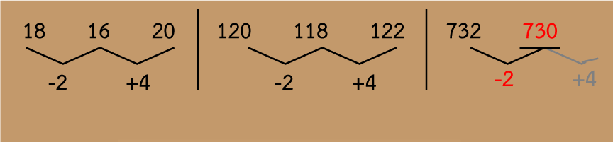
- อนุกรมที่มีตัวอักษรประกอบ ความสัมพันธ์จะเป็นระหว่างตัวอักษรกับตัวอักษร และตัวเลขกับตัวเลข เช่น 3 C 5 F 7 I 9 ____
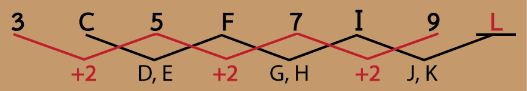
- อนุกรมที่มีรูป จะเป็นความสัมพันธ์ของตัวเลขและตำแหน่งที่อยู่ในรูป หรือ หรือความสัมพันธ์ในลักษณะอื่น เช่น
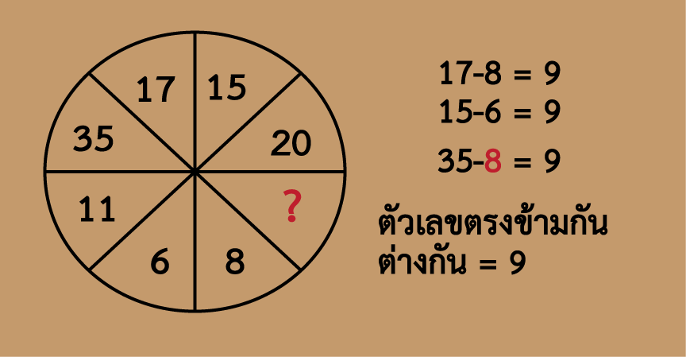
เทคนิคการทำโจทย์เลขอนุกรม
ก่อนอื่นต้องพิจารณาว่า โจทย์อนุกรมเป็นชนิดใด เริ่มจากง่าย ๆ ก่อน คือ
- เป็นแบบสะสมหรือไม่ ลองเอา 2-3 ตัวหน้า บวก-ลบกันเป็นตัวที่ 3 หรือ 4 หรือไม่
- เป็นแบบยกกำลังหรือไม่ มีตัวเลขห่างกันแบบก้าวกระโดด มีตัวเลขคุ้น ๆ ที่ยกกำลังได้หรือไม่หรือไม่
- เป็นแบบยกกำลังแล้วต้องบวกลบเพิ่มหรือไม่
- เป็นแบบซ้อน คือมีหลายชุดหรือไม่ ลักษณะนี้ มักจะเป็นอนุกรมค่อนข้างยาว มีตัวเลขหลายตัว
- เมื่อตรวจสอบคร่าว ๆ ตามขั้นตอนข้างต้น แล้ว จึงเริ่มดูความแตกต่างระหว่างคู่ต่อไป
- ความแตกต่างระหว่างตัวที่ 1 กับตัวที่ 2 บวกลบกัน หรือมีอะไรมาคูณ หรือมีอะไรมาคูณแล้วบวกหรือลบเพิ่มหรือไม่
- สุดท้าย ลองตีแฉกดูสัก 3 ครั้ง ถ้ายังไม่ได้ ก็ให้ข้ามไปทำข้ออื่นก่อน
การวิเคราะห์อนุกรม
การวิเคราะห์อนุกรมไม่มีสูตรสำเร็จ ขึ้นอยู่กับความถนัดด้านตัวเลขและการฝึกฝน คำแนะนำต่อไปนี้เป็นเพียงกรอบเพื่อช่วยเป็นแนวทางในการวิเคราะห์ให้รวดเร็วขึ้นเท่านั้น
- ถ้าตัวเลขคู่สุดท้าย เพิ่มขึ้นมากกว่าสองเท่า น่าจะมีการคูณ หรือมีการยกกำลัง หรือ มีการยกกำลังแล้วมีการบวกเพิ่ม หรือมีการคูณแล้วบวกเพิ่ม
- ถ้าตัวเลขคู่สุดท้าย เพิ่มขึ้นไม่มาก ให้ลองตีแฉกดู คือหาความแตกต่างระหว่างคู่ เริ่มจากตัวที่ 1 กับตัวที่ 2
อนุกรมส่วนใหญ่ มักจะแก้ได้จากการตีแฉก แต่ถ้าเกิน 3 ชั้นแล้วยังไม่เจอรูปแบบ แสดงว่า ไม่น่าจะหาได้จากการตีแฉก
-
ถ้าชุดตัวเลขในอนุกรม เพิ่มขึ้นหรือลดลงอย่างต่อเนื่อง ให้ดูว่า ตัวเลขเพิ่มขึ้น/ลดลงมากหรือน้อย ถ้า เพิ่มขึ้นไม่มาก ให้ลองหาค่าผลต่างระหว่างตัวเลข โดยการนำตัวเลขตัวหลัง ลบด้วยตัวเลขตัวหน้า
- ถ้าหาค่าผลต่างระหว่างตัวเลข แล้ว 1 ครั้งแต่ยังไม่เห็นความสัมพันธ์ที่ชัดเจน ให้หาผลต่างเพิ่มเติมอีกชั้นหนึ่ง ไม่ควรหามากไปกว่า 3 ครั้ง ถ้า 3 ครั้งแล้วยังไม่พบรูปแบบใด ๆ แสดงว่า รูปแบบความสัมพันธ์ของอนุกรมนี้ไม่น่าจะเป็นการบวก หรือลบ แต่อาจจะมีอนุกรมซ้อนกันอยู่ หรือ เป็นผลจากการกระทำของเลขตัวหน้า 2 จำนวน เป็นต้น
- ถ้าตัวเลขเพิ่มขึ้นหรือลดลงอย่างต่อเนื่อง และเพิ่มขึ้นหรือลดลงมาก อาจจะเป็นการคูณหรือหาร หรือ มีการยกกำลัง
ให้ลองหาผลต่างระหว่างตัวเลข โดยการคูณหรือหาร
- ถ้าตัวเลขมีทั้งเพิ่มขึ้นและลดลง ให้ลองดูว่า ตัวเลขสามารถจัดอยู่ในรูปยกกำลังได้หรือไม่ ถ้าเป็นเลขใกล้เคียง อาจจะมีการบวกหรือลบร่วมด้วย
และนอกจากนี้ ต้องคำนึงด้วยว่า ตัวเลขบางตัวสามารถยกกำลังได้หลายอย่าง เช่น
64 = 26 = 43 เป็นต้น
- ถ้าเป็นอนุกรมเลขเศษส่วน ให้มองหาความสัมพันธ์แยกกัน ระหว่างเศษและส่วน หรือ ทำส่วนให้มีค่าเท่ากัน แล้วดูความสัมพันธ์ของเศษ เป็นต้น
- ถ้าเป็นอนุกรมที่มีภาพ ให้พิจารณาตำแหน่ง และตัวเลขที่อยู่ในตำแหน่งนั้น ๆ หรือที่สัมพันธ์กัน
ข้อแนะนำเพิ่มเติม
- ควรฝึกฝน การบวก ลบ คูณ หาร และสูตรคูณ ให้คล่อง เพื่อความถูกต้องและรวดเร็วในการวิเคราะห์
- ฝึกฝนการทำเลขอนุกรมจำนวนมาก เพื่อหาประสบการณ์ จะทำให้สามารถคาดเดาและวิเคราะห์ได้คำตอบอย่างรวดเร็ว
- ถ้าคิดหาผลต่างระหว่างตัวเลข 3 ครั้งแล้วยังไม่เห็นระบบ ให้ลองตรวจดูว่า บวก ลบ คูณ หาร เลข ถูกต้องแล้วหรือไม่
- การหาผลต่างระหว่างตัวเลข ควรทดในกระดาษ เพื่อความถูกต้อง อีกทั้งยังสามารถตรวจสอบได้
- ควรทำความคุ้นเคยกับเลขยกกำลัง เลขฐาน 2 3 4 5 ยกกำลัง 2 3 4 5 6 เป็นต้น
ถ้าข้อใดใช้เวลาเกินกว่า 3 นาที ให้เก็บไว้ก่อน และทำข้อต่อไป - ถ้ามีเวลาจึงย้อนกลับมาทำอีกครั้ง